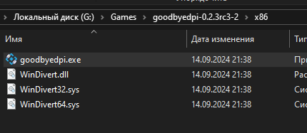
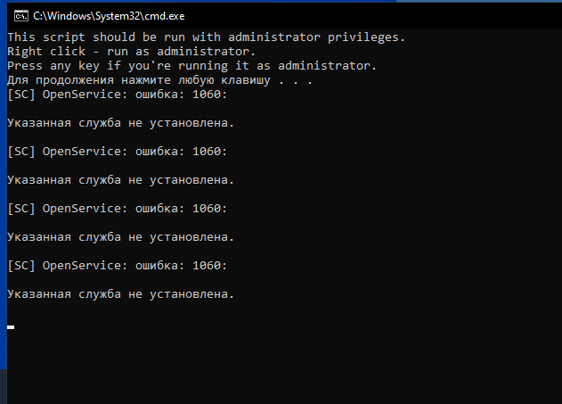
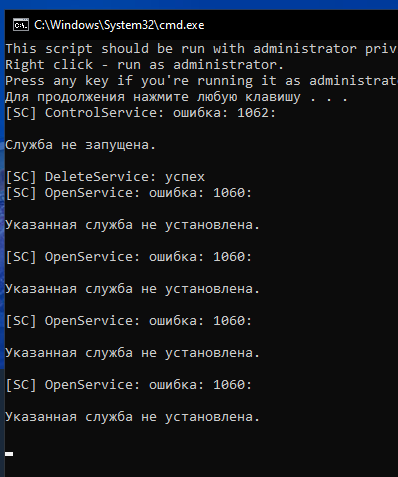
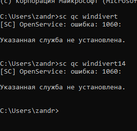
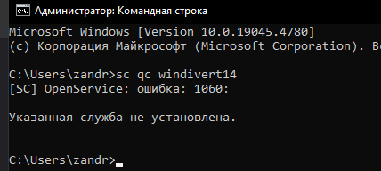
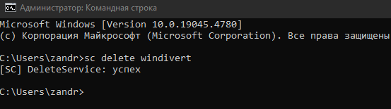
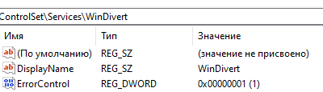
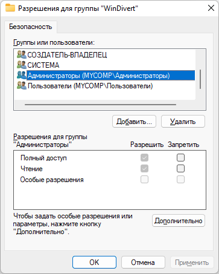

Проявлялась на rc1, потом скачал rc3, ошибка никуда не делась.
Предыстория: был у меня rc1, я горя не знал и 12 сентября вечером всё накрылось. Я поменял -9 на иные параметры, запустил и вылезла эта ошибка, менял назад, сносил гудбай и прочее, ошибка не исчезала.
Заколебал впн, скачал rc3, опять эта ошибка, что делать ?
Где эта ошибка? Какой файл вы запускаете?
Сам goodbyedpi.exe, а если из цмдешек: 1_russia_blacklist.cmd 1_russia_blacklist_dnsredir.cmd 1_russia_blacklist_YOUTUBE.cmd 1_russia_blacklist_YOUTUBE_ALT.cmd 2_any_country.cmd 2_any_country_dnsredir.cmd service_install_russia_blacklist.cmd service_install_russia_blacklist_dnsredir.cmd service_install_russia_blacklist_YOUTUBE.cmd service_install_russia_blacklist_YOUTUBE_ALT.cmd
А эти файлы WinDivert.dll и WinDivert64.sys рядом с goodbyedpi.exe лежат?
Да

У вас windows x32?
А service_remove.cmd от администратора запускали?
Вы архив с программой самый последний-распоследний скачали? (rc3-2) А почему вы папку x86 показали? Мне кажется, программа должна запускаться из папки x86_64
На winx64 - да. Но мало ли, может там x32
Я показал как пример, у меня x64 система, везде есть указанные windivert dll и sys. Я скачал прям последний с гита архив, в любом случае эта ошибка ремув пробовал неоднократно. У меня в принципе служба гудбая не встаёт.

В случае если я попытаюсь сделать инсталл и потом запущу ремув удалит он не все службы, а те что смогли встать

В командной строке напишите sc qc windivert - что ответит?
Потом то же самое для sc qc windivert14
С инсталлом, с инсталлом потом ремув результат идентичен, обе службы не встают ошибка им мешает

А так: sc qc WinDivert1.4 ?
Не встаёт, аналогично не установлена, ош. 1060
А в службах есть GoodbyeDPI?
Нет, ремув их снял, они не встают из-за ошибки
А можете плс вставить скрин с запуском goodbyedpi.exe, что он пишет, прям целиком все окошко?
а если cmd с правами админа запустить?
{kind=link}
ни единого раза его без этих прав не открывал Xd)
скрин командной строки c / users - это без прав админа
Фаерволл / антивирус не могут блокировать загрузку windivert?
Покажите скрин msinfo32 - Программная среда - Системные драйверы, что там начинающееся на w есть?
Не знаешь, не давай не нужных советов, не знаешь - спрашивай, там есть права админа

{kind=link}
sc delete windivert в ком. строке от админа
И посмотрите исчезнет ли windivert в этом списке
GDPI при этом должна быть закрыта
{kind=link}

Успех, GDPI у меня и не открывается xd
Открывается, просто ошибку в конце пишет же )
Теперь запускайте GDPI, как оно там?
{kind=link}
Результат отрицательный
Как насчет?
У меня их нет на ПК, дефендер снесён в корень
А система какая? Не win7 случайно?
Microsoft Windows [Version 10.0.19045.4780]
Имхо, что-то не дает запуститься драйверу windivert. Но вот что…
я горя не знал и 12 сентября вечером всё накрылось. Я поменял -9 на иные параметры, запустил и вылезла эта ошибка
Ну не могла вылезти эта ошибка от правки параметров. Повспоминайте, ничего 12 сентября не ставили, не удаляли?
regedit - HKEY_LOCAL_MACHINE\SYSTEM\CurrentControlSet\Services\WinDivert покажите скрин

Вообще ничего, GDPI перестал работать от дрочки роскомнадзора и у меня и у всех знакомых, я его полез чинить, им перестановка параметров помогла у меня всё сдохло, я забил, включил впн и смотрел ютуб на 480р.
Если выполнить sc delete windivert этот раздел исчезает?
Да, исчезает
У вас путь к windivert не прописывается. Попробуйте грохнуть эту папку, скачать заново последнюю версию и распаковать в корень другого диска?
Успех, рабочий способ - ласт сообщение от KDS, все заработало
{kind=link}
Согласен, как вариант. Лучше распаковать не на системный раздел (диск С) папку сменить точно надо
Вот так должен выглядеть этот раздел
{kind=link}
Создать новую учётку попробывать. Как вариант.
Короче, нефиг резать то, что резать не положено - какие глюки вылезут никому не известно.
Попробуйте в реестре поменять права к разделу Windivert (ПКМ по названию - Разрешения) для Администраторы\Название вашего_компа на Полный доступ

Ахахаха, кто бы мог подумать  Только сервис ремув не запускайте, чтобы не дай бог ничего не сломалось
Только сервис ремув не запускайте, чтобы не дай бог ничего не сломалось